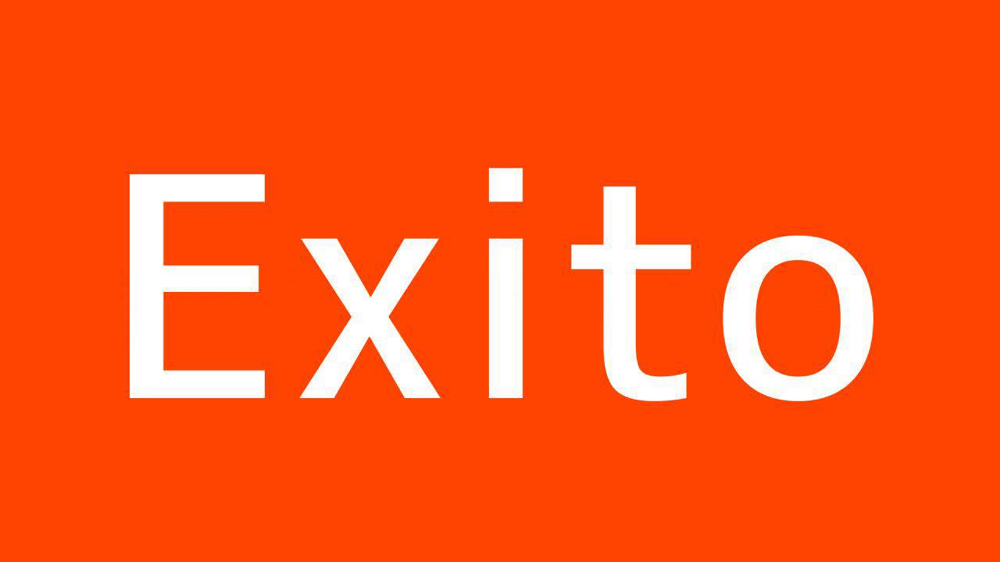

Por: Alumno del CECYTE Plantel 18 Manuel Corona - Carrasco
Como alumno de la preparatoria en la escuela CECYTE, en el estado de Oaxaca, puedo decir que esta experiencia de estar en casa ha sido complicada, ya que curso el sexto semestre para concluir mi prepa y todo esto ha sido nuevo para todos.
Durante este tiempo, he aprendido a ser más independiente y a gestionar mejor mi tiempo. Las clases en línea han sido un reto, pero también una oportunidad para adaptarme a nuevas formas de aprendizaje.
Esta página web me permite mostrar algunos conocimientos adquiridos sobre mi materia: Diseño y elaboración de páginas web, la cual debo presentar en mi colegio para acreditar parte de mi módulo y materia.
En espera de que este ejemplo del aprendizaje en el sexto semestre sea del agrado de las personas que lo lean. Tengo 17 años y me siento motivado por concluir una etapa más de mi vida.
